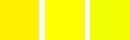
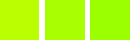

The Hue-Saturation command is used to adjust hue, saturation and lightness levels on a range of color weights for the selected area or active layer.
![[Note]](images/note.png)
|
Note |
|---|---|
|
This command does not work on Grayscale images. If the image is Grayscale, the menu entry is disabled. |
- Presets, Blending Options, Preview, Merge filter, Split view
-
Note These options are described in Section 8.1.2, “Colors Common Features”.
- Select Primary Color to Adjust
-
You can choose to adjust any of six colors: the three primary colors (Red, Green and Blue) and the three complementary colors (Cyan, Magenta and Yellow). They are arranged according to the color wheel. When hue increases, hue goes counter-clockwise. When it decreases, it goes clockwise. If you click the Master button, changes you make affect all colors. GIMP default is to set Red as 0. Note that these colors refer to color ranges and not to color channels.
Hue changes are shown in color swatches and the result is visible in the image if the Preview option is enabled.
- Overlap
-
This slider lets you set how much color ranges overlap. This effect is very subtle and works on closely-related colors only:
Figure 16.127. Example for the Overlap option

Original image. From the left to the right: a reddish yellow (255;240;0); a pure yellow (255;255;0); a greenish yellow (240;255;0).

Overlap = 0. Hue = 15. Colors become (186;255;1), (168;255;1), (156;255;1).
Overlap = 100. Hue = 15. Colors become (192;255;1), (168;255;1), (162;255;1). Because of overlap, greenish is less green and reddish is less red.
- Adjust Selected Color
-
- Hue
-
The slider and the input box allow you to select a hue in the color wheel (-180, 180).
- Saturation
-
The slider and the input box allow you to select a saturation: -100, 100.
- Lightness
-
The slider and the input box allow you to select a value (luminosity): -100, 100.
Note Lightness changes here concern a color range, while they concern a color tone with Curves and Levels tools, which work on color channels. If you change the Yellow lightness with Hue-Saturation, all yellow pixels will be changed, while only dark, bright or medium pixels luminosity will be changed with Curves or Levels tools.
- Reset Color
-
This button resets the changes you made to the hue, lightness and saturation of the selected color.